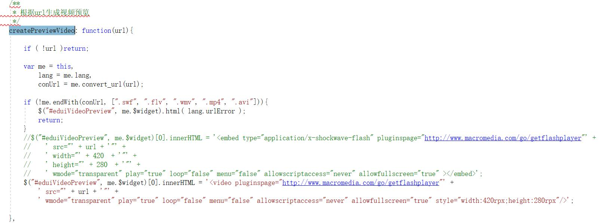
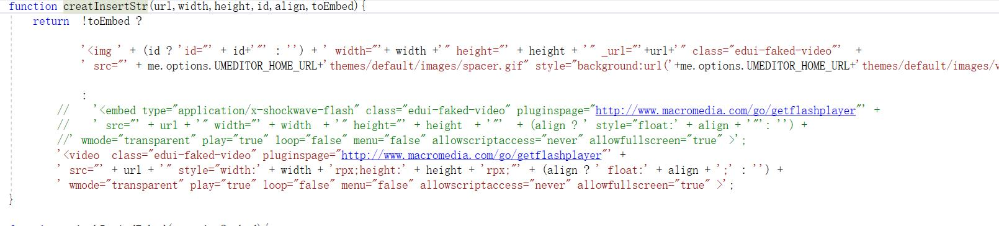
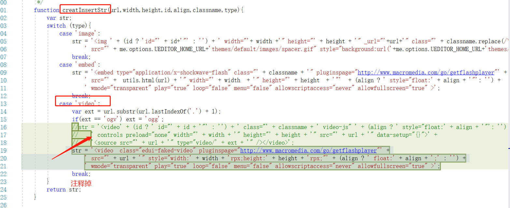
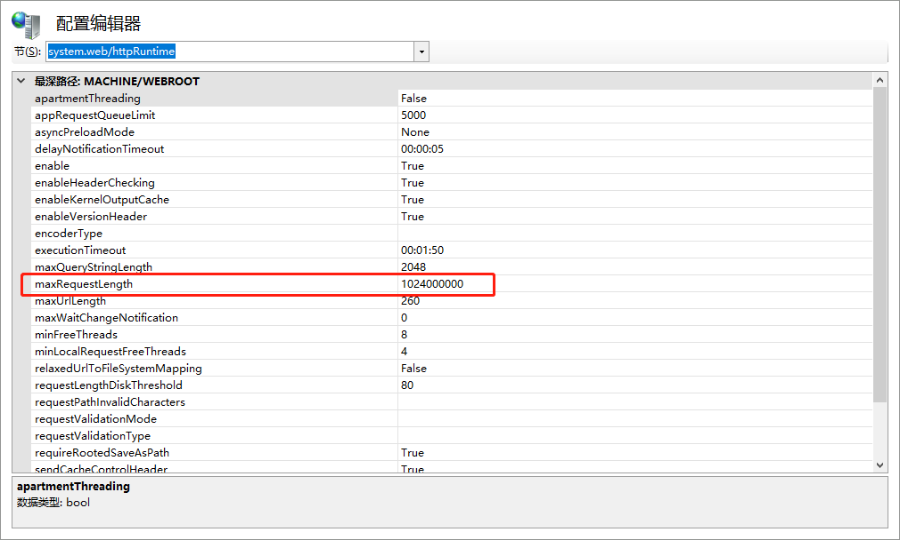
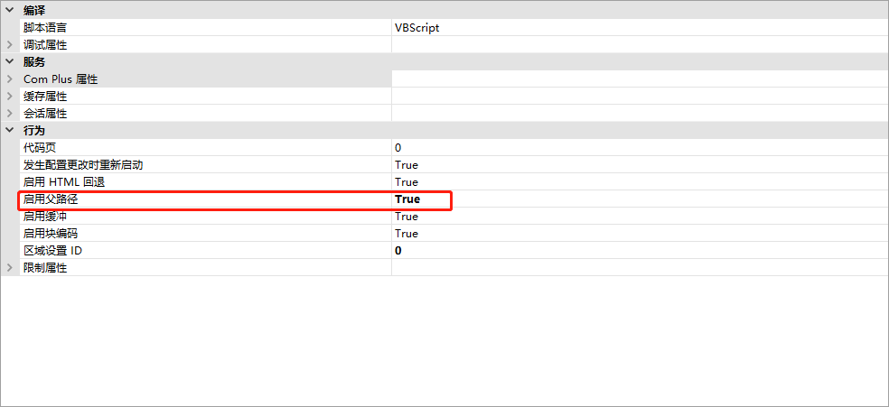
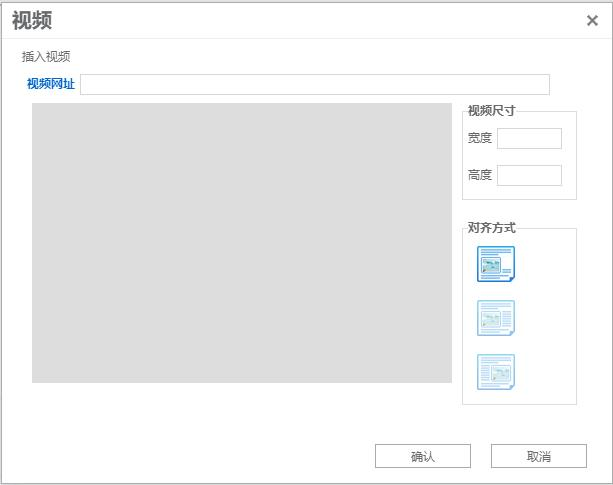
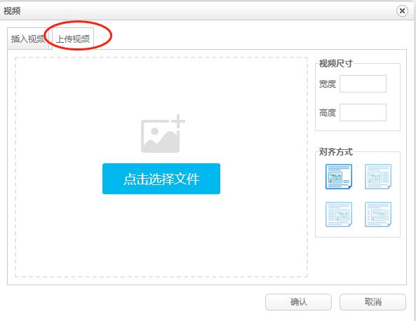
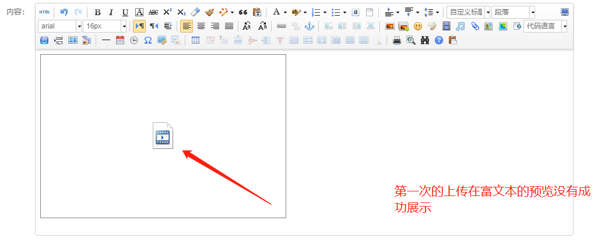
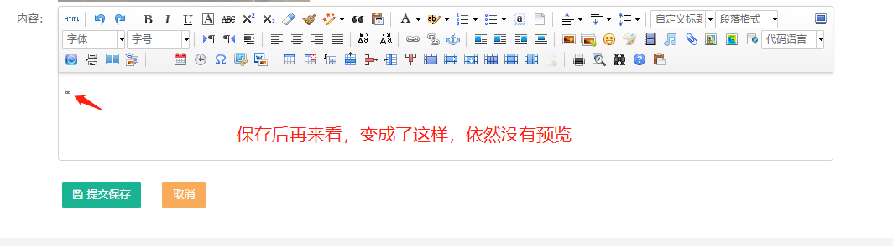

a.小程序不支持<embed>标签。
1. createPreviewVideo
所在位置video.js

代码:
$("#eduiVideoPreview", me.$widget)[0].innerHTML = '<video pluginspage="http://www.macromedia.com/go/getflashplayer"' +
' src="' + url + '"' +
' wmode="transparent" play="true" loop="false" menu="false" allowscriptaccess="never" allowfullscreen="true" style="width:420rpx;height:280rpx"/>';
2.修改 creatInsertStr
所在位置 umeditor.js

如果您使用的是ueditor
creatInsertStr 下面 case 'video':

代码:
str = '<video class="edui-faked-video" pluginspage="http://www.macromedia.com/go/getflashplayer"' +
' src="' + url + '" style="width:' + width + 'rpx;height:' + height + 'rpx;"' + (align ? ' float:' + align + ';' : '') +
' wmode="transparent" play="true" loop="false" menu="false" allowscriptaccess="never" allowfullscreen="true" >';
b.上传限制
1.修改web.config配置 maxRequestLength 新增节点<system.webServer>
<system.web>
<compilation debug="true" targetFramework="4.6.1" />
<httpRuntime maxRequestLength="1024000000" executionTimeout="9000" maxQueryStringLength="2048" targetFramework="4.5" />
</system.web>
<system.webServer>
<security>
<requestFiltering>
<requestLimits maxAllowedContentLength="1000000000"/>
</requestFiltering>
</security>
</system.webServer>
2.修改IIS配置


c:两种js不同
UM的视频上传

UE的视频上传

Date:11月4日
预留问题:在富文本里面预览上传的视频.


下班前找到原因了,之前我们的代码里面没有加
controls="controls"
代码:
str = '<video ' +
' src="' + url + '" style="width:' + width + 'rpx;height:' + height + 'rpx;"' + (align ? ' float:' + align + ';' : '') +
' wmode="transparent" play="true" loop="false" menu="false" allowscriptaccess="never" allowfullscreen="true" controls="controls" >';
删除 class="edui-faked-video" pluginspage="http://www.macromedia.com/go/getflashplayer"' 否则预览不出来
d:无法删除
可以用查看html代码 删除这段标签的方法进行处理